o 5S é um programa para a gestão de empresas de todos os segmentos que é capaz de provocar mudanças comportamentais bem rapidamente e com padronização ;
No Japão / No Brasil:
Seiri / Senso de utilização
Seiton / Senso de ordenação
Seiso / Senso de limpeza
Seiktsu / Senso de saúde e padronização
Seiktsu / Shitsuke / Senso de disciplina e autodisciplina
Os propósitos da metodologia são de melhorar a eficiência através da destinação adequada de materiais (separar o que é necessário do desnecessário),
organização, limpeza e identificação de materiais e espaços e a manutenção e melhoria do próprio 5S.
Os principais benefícios da metodologia 5S são:
Benefícios do 5S
O 5S trás diversos benefícios diretos para as indústrias que colocam o programa em prática. Como o ambiente fica mais limpo, organizado, classificado e otimizado, é possível alcançar resultados como:
- Aumentar a qualidade dos produtos;
- Aumentar a Aumentar a produtividade;
- Deixar a empresa preparada para implementar outras metodologias de qualidade e produtividade;
- Identificar falhas e pontos de melhoria nos processos;
- Prevenir acidentes no ambiente de trabalho;
- Melhorar o ambiente e a qualidade do trabalho;
- Melhorar o ambiente e a qualidade do trabalho;
- Ambiente mais organizado e padronizado ajuda a implementar certificações, como a iso-9001.
Seiri / Senso de utilização
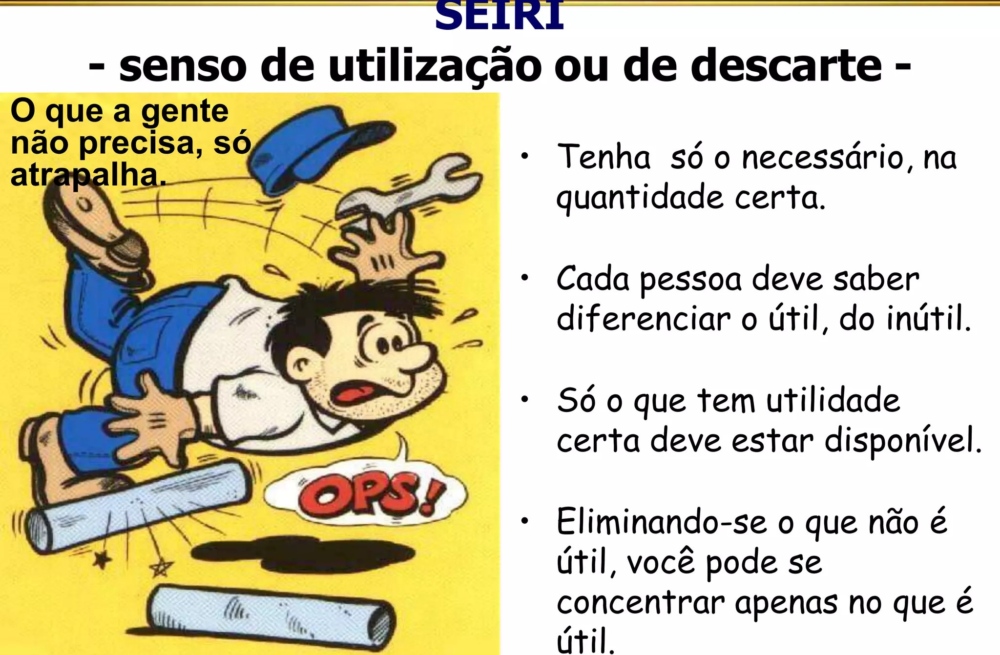 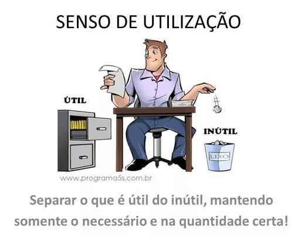 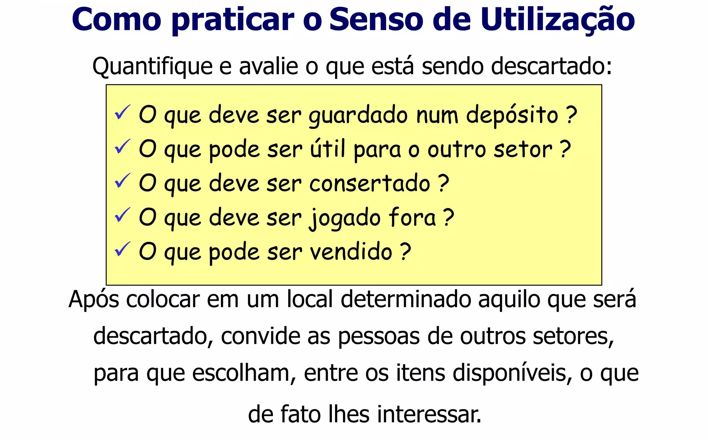Seiton / Senso de ordenação
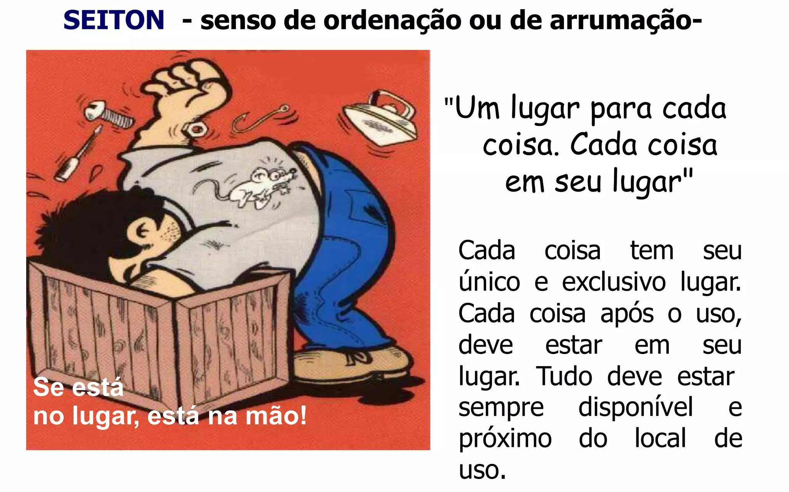 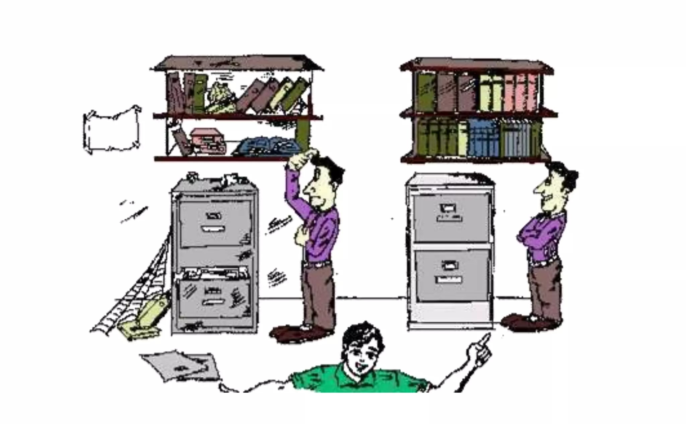 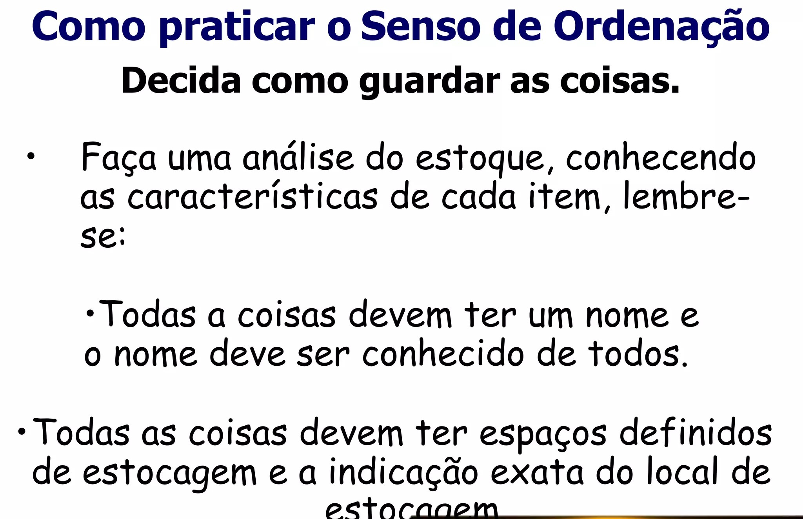Seiton / Senso de limpeza
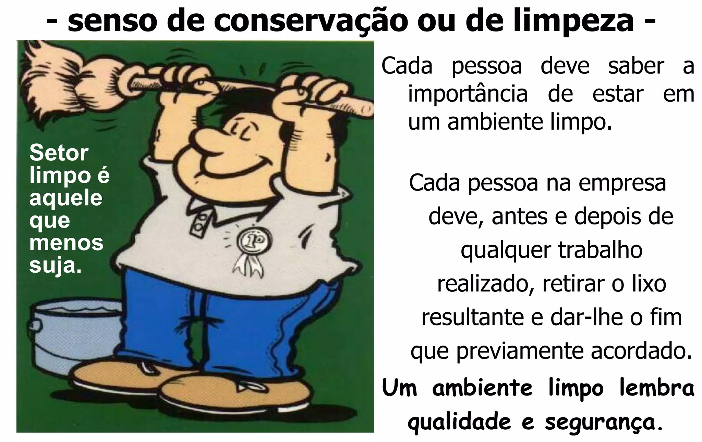 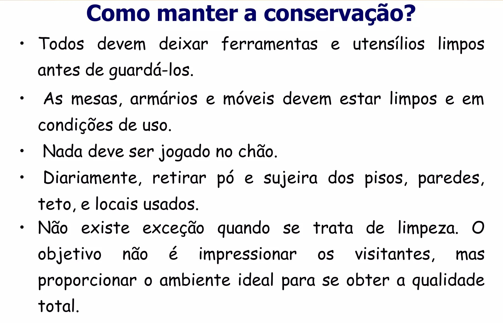 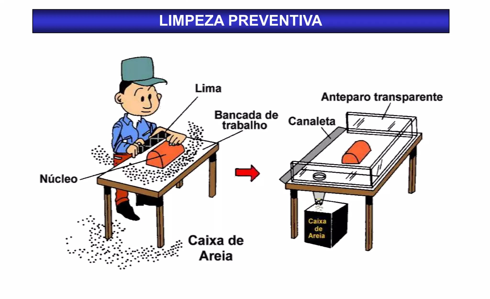Seiton / Senso de saúde
 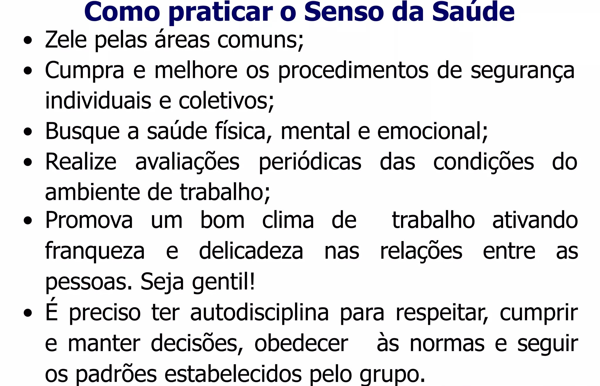
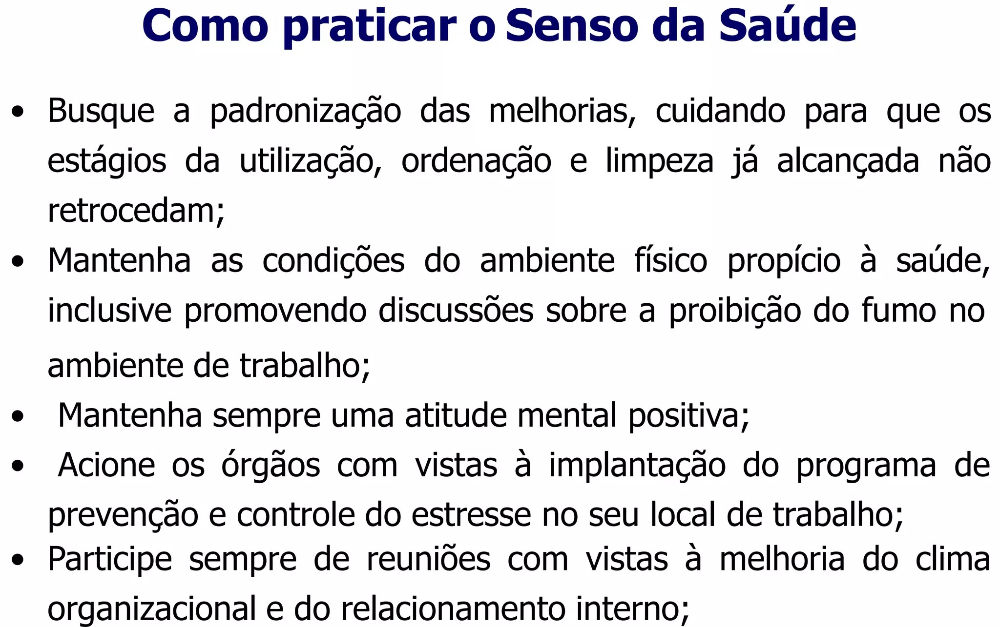
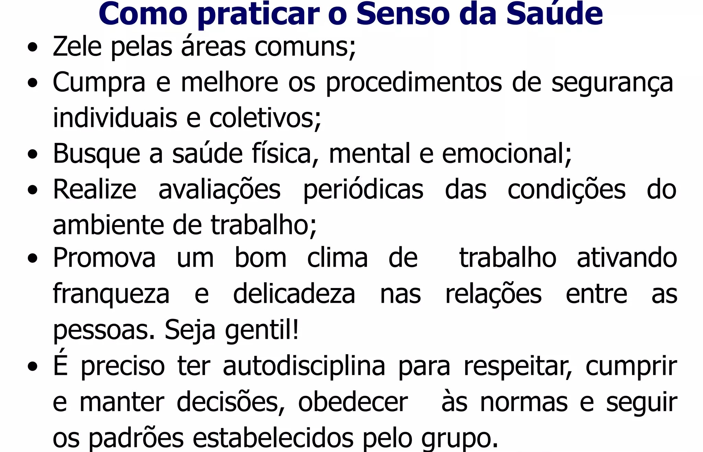
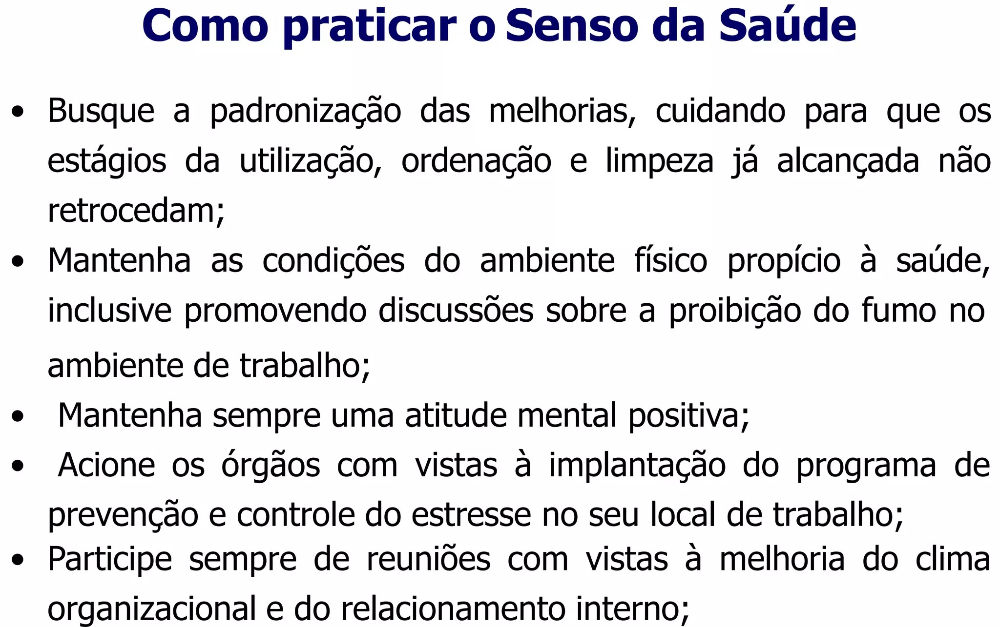